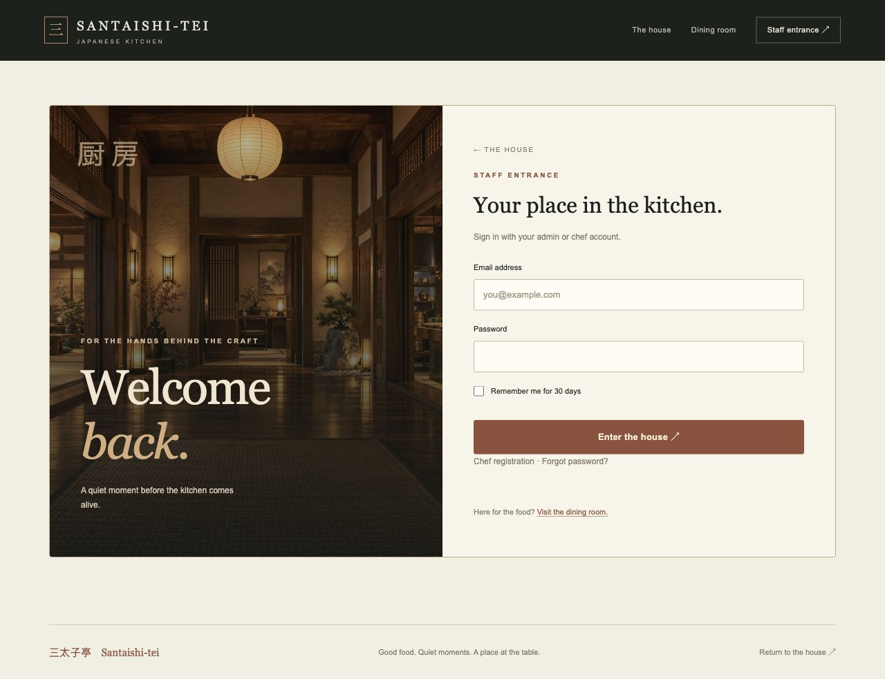
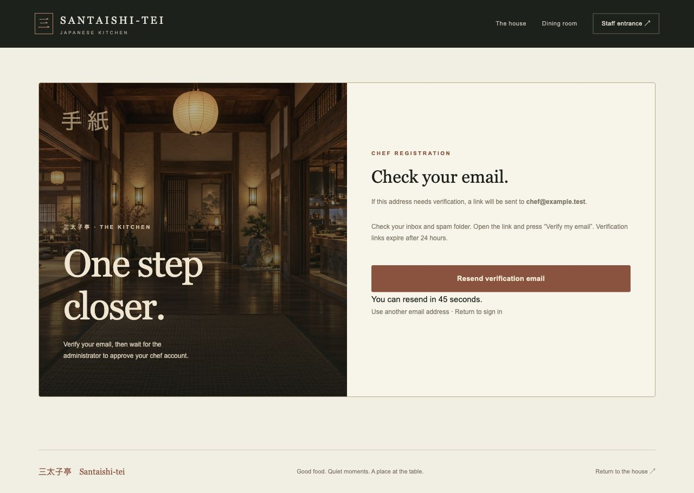
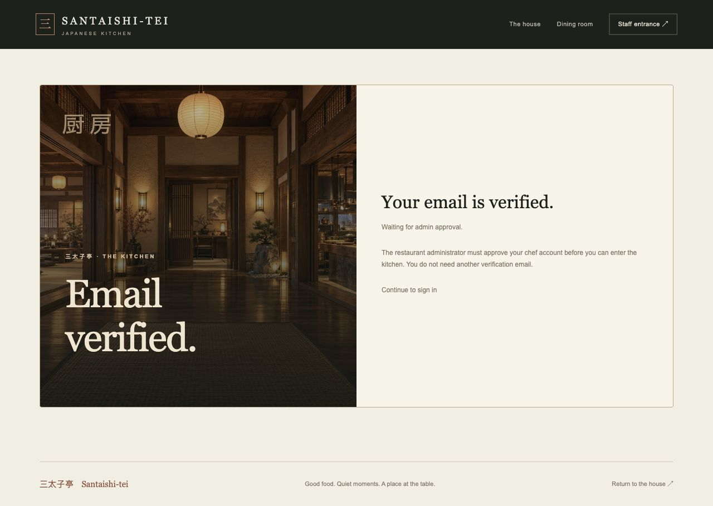

三太子亭
Santaishi-tei
Staff authentication
Block 8 · Sign-up, sign-in, cookies & sessions
Tam Thái Tử
24127278 · 24127322 · 24127497
The staff entrance

One entrance for staff
Chefs and administrators sign in. Customers do not need accounts.
New chefs register themselves; only administrators grant staff access.
Forgot password and Remember me are part of the same flow.
A clear next step after registration

Check your email
Registration redirects here with HTTP 303.
The page explains the next step and offers another email after one minute.
Refreshing does not reset the stored resend timer. The link expires after 24 hours.
Verification and approval are separate

Two independent requirements
Email verification demonstrates access to the inbox.
Administrator approval grants permission to work in the restaurant.
Verified + approved + active
All are required to sign in.
Registration workflow
Approval and verification may happen in either order. Neither substitutes for the other.
The application remains SSR
Page transitions, dialogs and the resend countdown enhance server-rendered HTML.
Cookies and database sessions
In the browser
A signed session ID in a cookie.
- HttpOnly prevents JavaScript access.
- SameSite=Lax limits cross-site sending.
- Secure is enabled in production.
In PostgreSQL
Session state, expiry, user ID and session version.
- Login regenerates the session ID.
- Each request rechecks staff access.
- Logout deletes the session.
Normal login: 8-hour inactivity window. Remember me: 30 days. Persistence survives server restarts while the session remains valid.
Password recovery
After a successful reset
Replace the password hash.
Delete existing signed-in sessions and increment the session version.
Access rules still apply
The old password and consumed link fail.
Resetting a password does not verify an email or approve an application.
Database changes for Block 8
| Model | Fields / purpose |
|---|---|
| StaffUser | emailVerifiedAt · approvalStatus · sessionVersion |
| AuthToken — new | User reference, purpose, unique token hash, expiry, used timestamp and creation timestamp |
| Session — retained | Session ID, serialized state, expiry and timestamps |
Ten application tables. The additive migration preserves restaurant records and existing staff access.
Existing staff are grandfathered as verified and approved; inactive accounts stay inactive. Full field types and constraints are in docs/database/README.md.
Server-enforced permissions
| Action | Visitor | Chef | Admin |
|---|---|---|---|
| Browse published menu | Yes | Yes | Yes |
| Dishes, recipes, usage and waste | — | Yes | Yes |
| Categories, ingredient metadata, receipts and corrections | — | — | Yes |
| Approve, reject or deactivate chefs | — | — | Yes |
Protected CRUD requires authentication and the correct role. Every mutation also requires CSRF validation.
Email delivery and CAPTCHA
Nodemailer + Gmail SMTP
A dedicated Gmail sender uses an App Password.
SMTP credentials stay on the server. Links use the configured application origin.
Verification tokens are random, expiring and single-use.
reCAPTCHA v2 checkbox
The browser presents Google's challenge.
The server validates the response and hostname with Google.
Google decides when an image challenge is shown; images are not guaranteed every time.
No credentials are included in the presentation or submission package. Real mail and CAPTCHA need configured providers and internet access.
Decisions shaped by feedback
| Decision | Reason |
|---|---|
| Return to the SSR codebase | Meet the exercise requirements and retain MVC/PRG. |
| Open chef registration + admin review | Simple onboarding without invitation management. |
| No customer or public admin registration | Keep the restaurant's existing account scope. |
| Check your email after registration | Give a clear next step and a reachable resend action. |
| Contextual resend on failed sign-in | Help unverified users without cluttering ordinary login. |
| Database sessions + version checks | Support persistence and revoke stale access. |
Validation and practical limits
62automated tests passed
Isolated test run · 9 November 2026
- Verification, cooldown and approval
- Password reset and session revocation
- SSR, roles, CSRF and DELETE/PRG
What still needs a live check
Delivery to a real inbox and spam handling.
Google's interactive challenge and configured hostname.
Production HTTPS, cookie behavior and concurrency.
Automated tests use an isolated database and mock providers. They do not prove that a live SMTP account or CAPTCHA key is configured.
Demonstration sequence
- Register and verifyUse a new chef email; show Check your email and the verification result.
- Approve and sign inAdmin approves; chef enters the kitchen but cannot open the office.
- Recover the accountReset the password; confirm the old password and another session fail.
- End accessLog out or reject the chef; protected CRUD becomes inaccessible.
Email ownership, staff approval and a valid session are separate conditions for access.